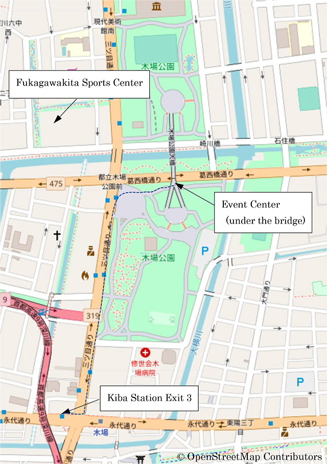

ORIENTEERING
Orienteering at ICC 2019
Friday, 19th, July, 7am - 9am
Staff:
Taketo Kobayashi (ES Kanto Club), Jörg Vetter (Tama Orienteering Club), Shin Murakoshi (Japan Orienteering Associatioon), Takeshi Sakurai (Tokyo Orienteering Associsation), Hirosi Shimazu (Rissho Univ. prof.),Takashi Irie (Previous orienteering national team member), Rika Tajima ((Previous orienteering national team member), Hisako Murakoshi (Japan Orienteering Associatioon), Kimie Terashima(Japan Orienteering Associatioon) , Shouta Sakoda(Toho high school student)
The orienteering event venue has been changed to KIBA Park in Koto-ku, Tokyo. SHIOKAZE Park in Odaiba, Tokyo, the original venue is not available due to the Tokyo Olympics construction prohibiting use of parks in Odaiba. We believe KIBA Park is a suitable place for orienteering close enough to Odaiba area.
KIBA means place for storage of lumber. From the Edo era, more than 200 years ago, there were many timber dealers and wood industries etc. located in the area. In 1969, these facilities moved out to SHIN-KIBA located about 4 kilometers south east from KIBA. KIBA Park was built on the site of former Kiba.
KIBA Park is one of the large-scale parks in Tokyo. There are many types of areas, open spaces, forest, big bridge, etc. You will enjoy orienteering together with splendid urban scenery.
We will also make an application software available for Orienteering with smartphones. The application is positioned as a way to spread navigation sports where there may be a lack of core number of navigation sports experts to organize events. The application makes holding navigation sport events extremely easy by making the map and course available on the application, taking away the need to print maps. Using GPS, there is no need to have actual orienteering control flags at the controls and the app also functions as an electronical punching system. The GPS tracking feature also makes it easy for organizers to secure the safety of the participants.
If interested, be sure to download the application NaviTabi (https://navitabi.co.jp/) from App Store or Google Play.
There are three main staffs. Taketo Kobayashi is geography teacher of Japanese high school, cartographer and orienteering competitor; Jörg Vetter is Ocad (GIS software for orienteering map) Japan reseller and orienteering competitor, Shin Murakoshi is Professor of Shizuoka University (Cognitive Psychology), cartographer, orienteering competitor, and a previous IOF (international orienteering federation) council member. Other staff members who are enthusiastic orienteers will help on event day.
Map:
KIBA Park (Scale: 1:4000, Contour Interval 2m, Accordance to International Specification of Sprint Orienteering Map : ISSprOM2019)
Event center:
Open space under the big bridge of KIBA Park. (If it will be rain, that protect us from rain.)
Transportation:
Event center is located 8 minutes walk from KIBA station on Tokyo Metro Tozai Line.
Registration:
Registration will be open from 7:00 am to 9:00 am. Due to heat and humidity, the event will be held in the morning, with earliest start at 7:00am. From 7:00am to 9:00am, participants can enjoy orienteering.
Classes:
We will offer three courses. Advanced Beginner (Yellow, 1.5km, 12 controls), Intermediate (Orange, 2.5km, 18 controls), and Advanced (Brown,
3.5km, 25 controls). Each course estimated winning time is 20 minutes.
Punching System
Emit is used as the electronic timing system. Participants are encouraged to bring their own E-card, but E-card rental is available at the registration.
Shower:
Shower facility is available at Fukagawakita sport center near event center.
It is 5 minutes walk from event center to Fukagawakita sport center.
Fukagawakita sport center is open 8:30 throught 22:00. \400 must be paid at Fukagawakita sport center (cash only)
Entry:
Entry by E-mail : Please send E-mail to taketo_kobayashi@yahoo.co.jp until July 14th. Please write the following in E-mail.
First Name (Taro)
Last Name (Suzuki)
Nationality (Japan)
ICC2019 Registration ID
Affiliation(Univ., Club etc.)
Choose class(L,M,S)
Gender (male,female)
Date of Birth (15/07/1985)
Postal Code (123-4567)
Address (1-2-3 Aoyama-cho, Chizu-shi, Chiba- ken)
Phone number (+ 81-80-0000-0000)
E-mail address (abcdefg@hijkl.co.jp)
E-card number (987654) (If you do not have it, please write "rental".)
Remarks (If any)
Entry at the event center in KIBA Park: You can also register directly on event day at the Event Center.
Fee
JPY 1,000. Please pay on event day at the event cente. (Cash only)
Contact:
For questions, please contact Taketo Kobayashi.
(e-mail: taketo_kobayashi@yahoo.co.jp)
